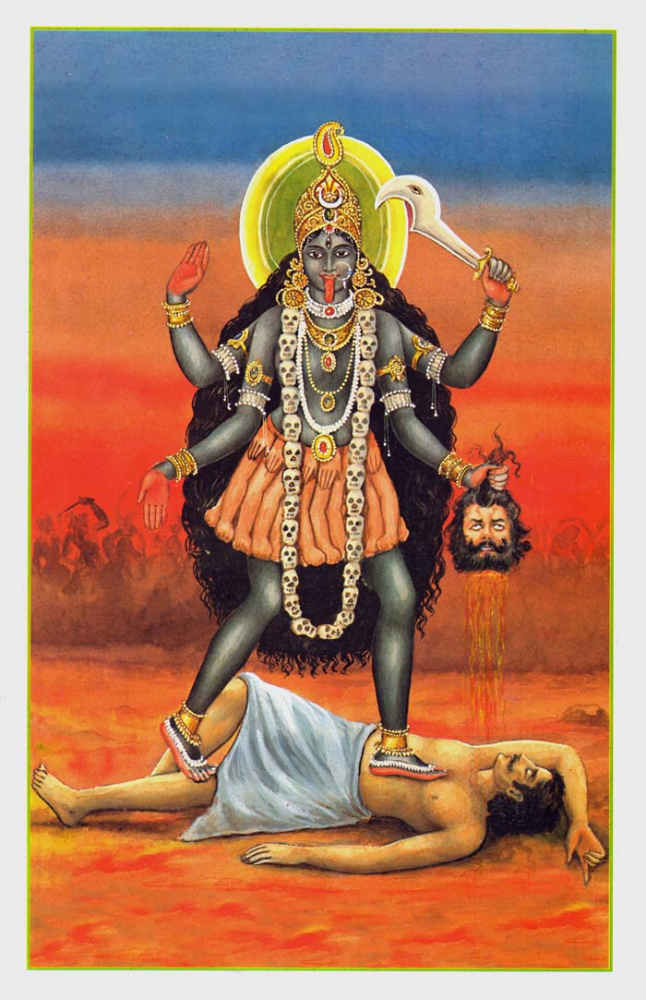
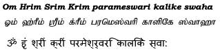
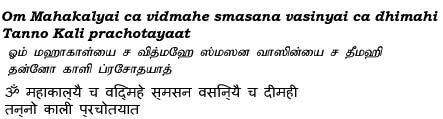

|
|||||
lordess sakthi
DASA MAHA VIDHYA
Kaali
|
 |
|
Kali is the first and foremost among Mahavidyas, and the patron deity of Kalika Kula school of Shaktism. Kali is Adya, the Primordial Goddesss. She is regarded Nirguna Brahman. Her consort is Mahakala. Her form was fearful, her hair untied and loose, her body the color of a dark cloud. She had deep set eyes and eyebrows shaped like curved swords. She stood on a corpse, wore a garland of skulls, and earrings made from the bones of corpses. She had four hands – on one hand she had the head of a skull, and the other a curved sword with blood dripping on it. She had mudras on her other two hands – one giving freedom from fear and the other giving blessings. She roared and the ten directions were filled with that ferocious sound. The exploits of this Goddess Kali are outlined in the Chandi Path. She is the Goddess that killed Chanda and Munda and also drank the blood of Raktabija. She is known as Kaushiki, She who came from within, and is the Slayer of Shumbha and Nishumbha. Kali is the first of the Das Mahavidyas. She is beyond time. She takes away the darkness and fills us with the light of Wisdom, which is why She is the embodiment of Jnana Shakti. She resides in the cremation grounds, where all creation dissolves. Kali is also famous for being the patron of Bhakti saints like Sri Ramakrishna Paramahamsa, RamprasadSen and KamalakantaBhattacharjee. Kali is worshiped more in West Bengal than anywhere else. Kali is worshiped in various forms like Dakshina Kali, Adya Kali, Maha Kali, Smashana Kali, Bhadra Kali, Chamunda Kali, Hamsa Kali, Krodha Kali, Guhya Kali, Kamakala Kali, Chintamani Kali, Krishna Kali, Raksha Kali and Nitya Kali. |
|
Beeja Mantra  Gayatri  |